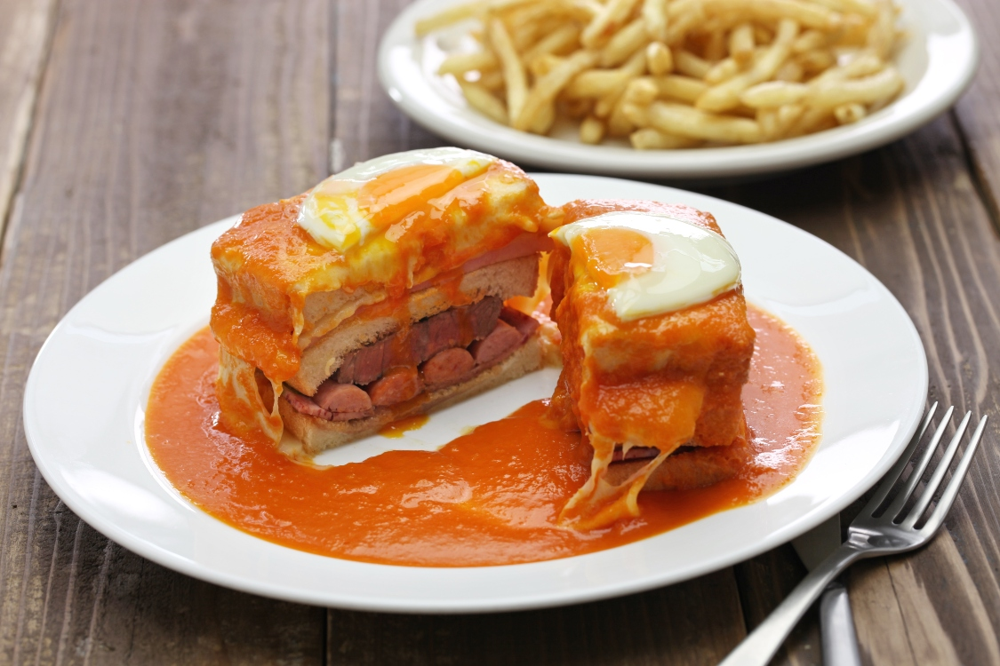

Francesinha

Description
The famous Portuguese francesinha. This one is from the city of Porto!
It mostly consists of meats between bread slices covered with a strong sauce.
Ingredients
- Bread
- Sausages
- Cheese
- Real Meat
- Sauce
Steps
- Get some bread
- Get some cheese
- Cook some meat
- Make the sauce
- Build the sandwich
- Add the cheese on top
- Make that sauce drip on the sandwich
- Eat it